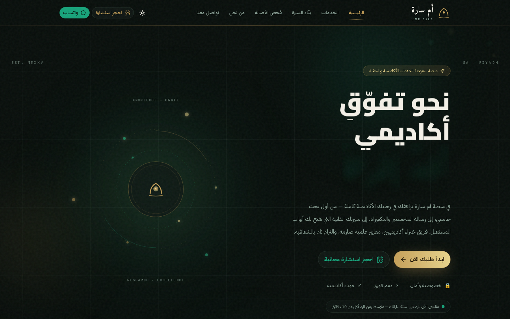
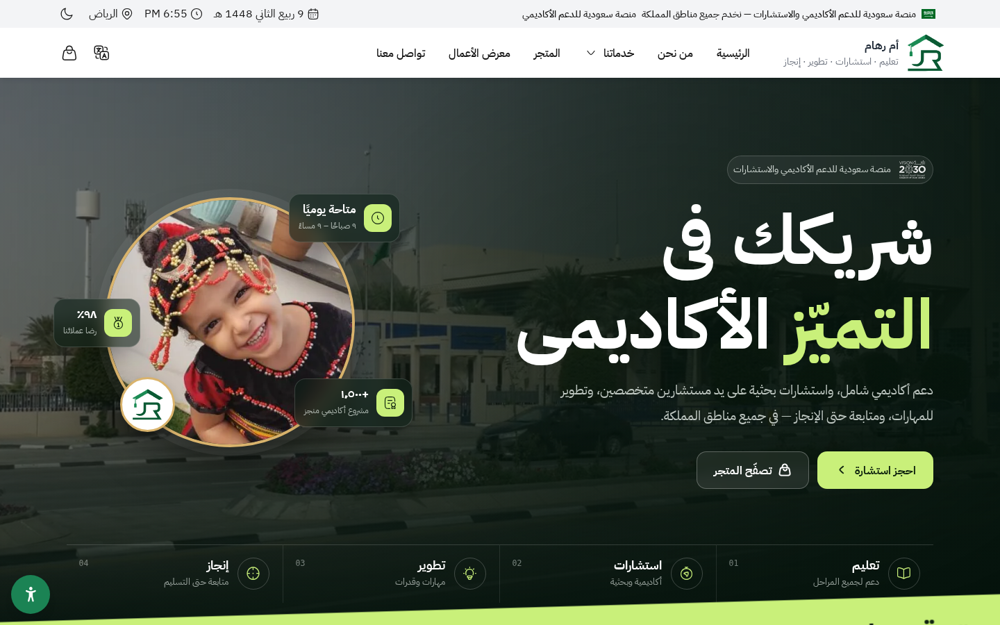
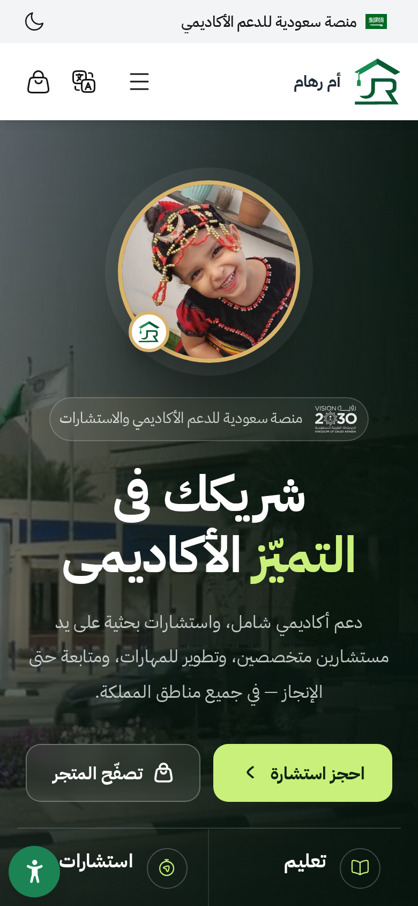
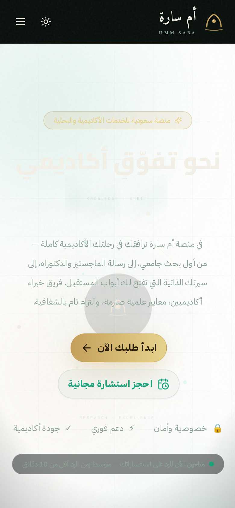
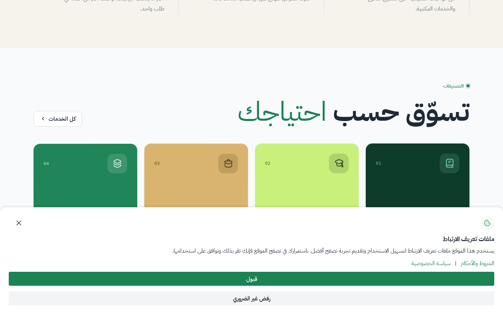
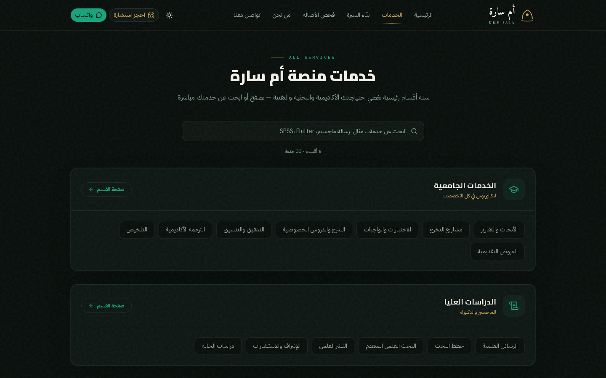

بعد قياس شامل للطرفين على ستة محاور مرجّحة، تُحرز منصة أم سارة المنشورة 7.9 من 10 بينما تحرز واجهة أم رهام 6.5 من 10. الفارق الحاسم ليس في الجمال بل في الجاهزية للإنتاج: أم سارة موقع حيّ فعلياً يخدم الزوار الآن على Vercel، متصل بقاعدة بيانات PostgreSQL محمية بسياسات RLS، مع خط نشر تلقائي كامل من GitHub، وأداتين مستقلتين تعملان داخل المتصفح (بنّاء السيرة الذاتية المتوافق مع ATS وفحص الأصالة). في المقابل، ملف أم رهام واجهة أمامية متقنة الصنعة لكنها غير منشورة، وقيمتها التجارية الأساسية (المتجر الحي ولوحة التحكم) معلّقة على باك-إند يعيش في مستودع منفصل لم يُرفَق في الملف المُرسل أصلاً.
هذا لا يعني أن المقارنة بلا دروس. أم رهام يتفوق تفوقاً واضحاً في ثلاثة أبعاد عملية: تجربة الجوال (35 من 40 مقابل 24 من 40 في تقييم نموذج الرؤية المستقل)، ورحلة الشراء المباشرة بسلة تسوق تُرسَل طلباً واحداً مرتباً عبر واتساب، وعمق المحتوى السردي الذي يبيع الخدمة بقصة لا بقائمة. كما كشف القياس ضعفاً حقيقياً في أم سارة لم يكن ظاهراً من قبل: هيرو الجوال يفقد تباينه أمام توهج اللؤلؤة ثلاثية الأبعاد (سطوع متوسط 218 من 255)، وهي ثغرة تستحق إصلاحاً عاجلاً وثّقناها بالأدلة في القسم الرابع.
- منشورة حيّة + قاعدة بيانات + CI/CD
- هوية بصرية فاخرة أقوى (39/50)
- أخف وزناً بـ 2.3 مرة وأكمل إتاحةً
- نقاط ضعف: هيرو الجوال، تواصل غير مكتمل
- أفضل تجربة جوال وأزرار تحويل
- متجر: 26 خدمة و58 نموذجاً بسلة ذكية
- محتوى سردي واستهداف جامعي أعمق
- نقاط ضعف: غير منشورة، بلا قاعدة بيانات
سطح مكتب (VLM)
سطح مكتب (VLM)
تجربة الجوال (VLM)
تجربة الجوال (VLM)
مقابل 1214KB لرهام
| البُعد المرجّح | الوزن | أم رهام | أم سارة | من يفوز؟ |
|---|---|---|---|---|
| البنية والتشغيل والإنتاجية | 25% | 4.0 | 9.5 | سارة |
| الهوية البصرية — سطح المكتب | 20% | 6.0 | 9.0 | سارة |
| تجربة الجوال | 15% | 9.0 | 6.0 | رهام |
| التجارة والتحويل | 15% | 8.0 | 6.0 | رهام |
| عمق المحتوى والاستهداف | 10% | 8.5 | 7.0 | رهام |
| الأداء وSEO وإتاحة الوصول | 15% | 6.0 | 8.0 | سارة |
| المجموع المرجّح من 10 | — | 6.5 | 7.9 | سارة |
مشروع أم رهام وصل ملفاً مضغوطاً (umm-reham-frontend-main.zip بحجم 52.8 ميغابايت) من مجلد Google Drive بعنوان «مشروع ام رهام فروند اند». بعد الفك والفحص تبيّن أنه الواجهة الأمامية لمشروع مزدوج المستودعات: واجهة ثابتة من سبع صفحات تُبنى بسكربت Node بلا أي إطار عمل، مبنية فوق النظام التصميمي السعودي الرسمي NDS مع حركة GSAP وScrollTrigger وLenis، ومستودعها الأصلي عام على GitHub باسم samshaher/umm-reham-frontend. الملف يحوي أيضاً لوحة تحكم كاملة للمتجر، لكن README المشروع نفسه يقرّ بأنها «تتطلب الباك-إند» — وهو مستودع منفصل (umm-reham-backend) لم يُرفَق في الملف، ما يعني أن كل ما يتجاوز العرض الثابت (تسجيل دخول الأدمن، تعديل الخدمات من الواجهة) غير قابل للتشغيل من هذا الملف وحده. الأسعار في المتجر موسومة صراحة في الكود بأنها «قيم مبدئية للتنسيق تحتاج مراجعة قبل الإطلاق».
منصة أم سارة هي المشروع الجاري لصاحب هذا الحساب: تطبيق Next.js 16.1.3 بـ TypeScript وTailwind، منشور فعلياً على https://umm-sara.vercel.app عبر خطة Hobby مجانية، مع بنية إنتاجية كاملة: ثماني صفحات وثلاثة مسارات API مدمجة، قاعدة Supabase PostgreSQL بستة جداول محمية بسياسات RLS مطبّقة ومتحقق منها بالاستعلام المباشر، خط CI/CD يطبّق مخطط قاعدة البيانات تلقائياً عند كل تغيير عبر GitHub Action، وإصدار موسوم v10.0.0 بمستودع نظيف على GitHub (AhmedMar98/Umm-sara). هذه ليست واجهة للعرض بل منظومة تعمل: نموذج الطلبات يكتب فعلياً في القاعدة (تحقق persisted:true متكرر مرتين)، ونفس الشيء لنموذج حجز الاستشارات.
الفجوة الأعمق بين الطرفين معمارية لا شكلية. أم سارة منظومة متكاملة الطبقات: واجهة تعرض، مسارات API تخدّم، قاعدة بيانات تحفظ، وخط نشر يوصل الكود بالإنتاج تلقائياً. أم رهام طبقة عرض واحدة مصنوعة بإتقان، لكن رحلة البيانات فيها تتوقف عند ملفات JavaScript ثابتة (fallback محلي مصمم أصلاً كحل مؤقت بانتظار باك-إند خارجي). عملياً: طلب يُرسل من موقع أم سارة يصل قاعدة البيانات ويُستعلم عنه بـ SQL ويتحقق منه الإنسان؛ طلب يُرسل من نسخة أم رهام المرفقة يذهب إلى رقم واتساب محفوظ في الكود، ولا يمكن لأصحاب المنصة معرفة أنه حدث إلا لو ردّ العميل في المحادثة.
| المحور | أم رهام (Google Drive) | أم سارة (المنشورة) |
|---|---|---|
| البنية | موقع ثابت متعدد الصفحات، HTML/CSS/JS خالص بلا إطار عمل، يُبنى بسكربت Node | Next.js 16.1.3 + TypeScript + Tailwind (App Router) |
| الصفحات | 7 صفحات ثابتة (الرئيسية، من نحن، خدماتنا، المتجر، معرض الأعمال، العمل، تواصل) | 8 مسارات من بينها صفحة فئات ديناميكية /services/[category] |
| واجهات API | لا شيء يعمل — المسارات متجهة لباك-إند مفقود من الملف | 3 مسارات عاملة: الطلبات، الاستشارات، والجذر |
| قاعدة البيانات | لا توجد — بيانات مضمّنة بملفات JS محلية | Supabase PostgreSQL: 6 جداول + RLS 6/6، مطبقة ومتحقق منها |
| لوحة التحكم | موجودة بالكود (إدارة متجر بصلاحيات) لكن دخولها يتطلب الباك-إند الغائب | غير موجودة بعد (الأولوية التالية طبيعياً) |
| حالة النشر | ملف مضغوط في Drive — غير منشور على الويب | حيّة الآن على umm-sara.vercel.app (خطة مجانية بلا بطاقة) |
| CI/CD | لا يوجد | أوتوماتيكي بالكامل: كل push للإنتاج ينشر + GitHub Action يطبق مخطط القاعدة |
| الأمان | جلسة أدمن بتصميم كوكي HttpOnly سليم (على الورق، في الباك-إند المفقود) | RLS مفعلة + معالجة جهة الخادم + أسرار في بيئة مشفرة |
| الحركة والتفاعل | GSAP + ScrollTrigger + Lenis مع failsafe مدمج واحترام prefers-reduced-motion | مشهد لؤلؤة 3D (three.js/R3F) + جزيئات + Scene Boundary ضد فشل WebGL |
| نظام التصميم | النظام السعودي الرسمي NDS كاملاً + خطا IBM Plex Arabic وCairo | نظام مخصص: توكنات ذهب/زمردي + تايبوغرافيا عربية مضبوطة بفحص تباين 14/14 AA |
| الاعتماديات | صفر حزم npm (مكتبات مرفقة يدوياً vendor) | منظومة npm كاملة مع فحص TypeScript صارم بلا تجاهل |
عرضنا الرئيسيتين جنباً إلى جنب على نموذج الرؤية GLM-4.5V بمطالبة تقييم موحدة عبر خمسة بنود. النتيجة على سطح المكتب: أم سارة 39 من 50 مقابل أم رهام 35 من 50. سارة تكتسح بندي الهوية والعناصر البصرية (9 و8 من 10) بفضل فخامة الوضع الداكن الذهب/زمردي والمشهد ثلاثي الأبعاد الغامر الذي وصفه النموذج بأنه «يضاهي مواقع الاستشارات العالمية»، بينما يتفوق رهام في وضوح نداء الفعل (9 من 10) بزره الأخضر الفاقع على الخلفية الداكنة، وفي تنظيم المحتوى ببطاقاته العائمة للإحصاءات. في بنود الخط العربي تقدم سارة بهامش (8 مقابل 7) مع ملاحظة النموذج على مبالغة رهام في الأخضر الفاتح لكلمة واحدة داخل العنوان.


الصورة تنقلب رأساً على عقب في الجوال. بجلسة تقييم مستقلة لمحاكاة iPhone، منح النموذج أم رهام 35 من 40 مقابل 24 من 40 لأم سارة، بفوارق حادة: وضوح الهيرو 9 مقابل 5، والأزرار 9 مقابل 7، والانطباع الأول 9 مقابل 6. ولم نقبل هذا الحكم كرواية — أعدنا تشخيصه بالقياس: لقطة جوال أم سارة تسجل سطوعاً متوسطاً 218 من 255؛ مشهد اللؤلؤة المتوهج يبتلع نصف الشاشة على الجوال ويجعل العنوان ذا اللون الكريمي شبه الذائب فوقه، بينما تحقق برمجياً من أن السمة الداكنة مفعلة فعلاً (خلفية rgb(8,14,11)) أي أن المشكلة ليست في السمة بل في هندسة التوهج مقابل النص داخل الهيرو الضيق. في جولة تحقق ثانية بنموذج الرؤية على لقطة جديدة نزل وضوح عنوان هيرو الجوال إلى 2 من 10 مع وصف «شبحي». هذه أوضح ثغرة قابلة للإصلاح في أم سارة اليوم، وأوضح درس يستحق النقل من رهام.


| بند التقييم البصري | أم رهام | أم سارة | الأفضل |
|---|---|---|---|
| الهوية والفخامة البصرية — سطح مكتب | 6/10 | 9/10 | سارة |
| تنظيم المحتوى وهرميته | 8/10 | 7/10 | رهام |
| جودة التايبوغرافيا العربي | 7/10 | 8/10 | سارة |
| العناصر البصرية (3D/حركة) | 5/10 | 8/10 | سارة |
| وضوح نداء الفعل CTA | 9/10 | 7/10 | رهام |
| مجموع سطح المكتب | 35/50 | 39/50 | سارة |
| وضوح الهيرو — جوال | 9/10 | 5/10 | رهام |
| أحجام الأزرار وقابلية اللمس | 9/10 | 7/10 | رهام |
| قابلية القراءة على الجوال | 8/10 | 6/10 | رهام |
| الانطباع الأول على الجوال | 9/10 | 6/10 | رهام |
| مجموع الجوال | 35/40 | 24/40 | رهام |
قسنا كل موقع بجولتين لكل صفحة (تهيئة ثم قياس) وأعددنا الطلبات والأحجام من مراقبة الشبكة مباشرة. النتيجة صافية: أم سارة أخف وزناً بنحو 2.3 مرة في الصفحة الرئيسية (529KB مقابل 1214KB) وعقدها في الشجرة أقل بكثير (780 مقابل 1239 عقدة DOM) — وكل كيلوبايت محسوب على الجوال السعودي الذي يتصفح غالباً بشبكات متوسطة. سبب ثقل رهام موثق بالفحص: ثلاثة فيديوهات MP4 خلفية (أبراج رؤية 2030 وأفق الرياض وخريطة المملكة بإجمالي يقارب 8MB) وملفات نظام NDS الكاملة غير المجزأة (ورقة أنماط واحدة بحجم 370KB). في المقابل تطلبه الشبكية أعلى عند سارة (67 مقابل 47 طلباً) بسبب تقسيم Next.js الحديث للحزم — وهو ثمن مقبول يعوّضه التحميل التدريجي الذكي.
| القياس (الجولة الثانية المستقرة) | رهام — الرئيسية | سارة — الرئيسية | رهام — خدمات | سارة — خدمات |
|---|---|---|---|---|
| الوزن المنقول التقريبي | 1,214 KB | 529 KB | 1,649 KB | 539 KB |
| عدد الطلبات | 47 | 67 | 43 | 111 |
| عقد DOM في الصفحة | 1,239 | 780 | 1,015 | 385 |
| حجم مستند HTML | 104 KB | 185 KB | 92 KB | 81 KB |
| TTFB (زمن أول بايت) | 1ms (محلي) | 6ms (Vercel) | 1ms (محلي) | 6ms (Vercel) |
في فحص إشارات محركات البحث وإتاحة الوصول، يتقدم الطرفان معاً في الأساسيات الصحيحة: كلاهما يعلن lang="ar" وdir="rtl" ويحمل وصف meta كاملاً وعنواناً عربياً سليماً. بعد ذلك ينفصلان: أم سارة تحمل وسوم Open Graph (أساس المشاركة على واتساب وتويتر)، وصورها صفر صور بلا نص بديل alt وهو المستوى الذي يفرضه فحص الوصول المعتمد في مشروعها (WCAG AA مثبت 14/14 في موجة V10). أم رهام يترك 22 صورة بلا alt في رئيسيته وحدها ولا يستخدم وسوم OG إطلاقاً، لكنه يعوّض جزئياً بلوحة إتاحة وصول مدمجة من NDS (تحكم بحجم الخط والتباين) وعدد aria-labels أعلى (32 مقابل 18) واحترام كامل لتفضيل تقليل الحركة prefers-reduced-motion. المحصلة: سارة أنظف هندسياً، ورهام أكثر تسامحاً مع المستخدم النهائي الذي يحتاج أدوات وصول مخصصة.
المقارنة العادلة تُظهر مواطن القوة لا الفائز فقط. هذه قائمة ما يمتلكه كل موقع ولا يملكه الآخر اليوم، منقولة من فحص الكود والصفحات مباشرة. لاحظ أن معظم ميزات أم رهام «عرضية» تعمل ببيانات ثابتة (أسعار مبدئية، كتالوج محلي)، بينما ميزات أم سارة «تشغيلية» مبنية على بنية تحتية حية — وهو جوهر الفرق بين واجهة جميلة ومنصة.
ينفرد به أم رهام
- سلة تسوق كاملة: تجميع خدمات من تصنيفات متعددة بكميات، ثم إرسال الطلب كرسالة واتساب واحدة مرتبة
- كتالوج مع أسعار: 26 خدمة موزعة على 4 تصنيفات و58 نموذجاً جاهزاً بسعر معروض (مبدئي)
- معرض أعمال حقيقي: صفحة معرض + صفحة عمل مستقلة لكل مشروع
- استهداف جامعي صريح: قسم بشعارات 7 جامعات سعودية كبرى يدعوك لاختيار جامعتك
- فيديوهات هوية وطنية: أبراج رؤية 2030 وأفق الرياض كخلفيات حية
- تواصل مكتمل: رقم واتساب حقيقي + بريد + إنستغرام + ساعات عمل رسمية
- موافقة الكوكيز وفق المتطلبات النظامية، وملف مدن المملكة saudi-cities.json
تنفرد به أم سارة
- بنّاء سيرة ذاتية عامل: قوالب متوافقة مع أنظمة ATS، محرر بمعاينة حية، تصدير PDF فوري
- خدمة فحص الأصالة: فحص اقتباس وتشابه نصي ومراجعة أكاديمية كصفحة مستقلة
- حجز استشارات: نموذج مواعيد يكتب في قاعدة البيانات (API مستقل يعمل الآن)
- مشهد اللؤلؤة 3D: تفاعل WebGL بإضاءة سينمائية وحدود خطأ تحمي الصفحة من الانهيار
- قاعدة بيانات حية: 6 جداول بسياسات RLS مطبقة ومتحقق منها بالاستعلام
- نشر مستمر: كل دفعة للإنتاج تصبح موقعاً حياً تلقائياً + Action لقاعدة البيانات
- وضعان داكن وفاتح بتوكنات هوية موحدة عبر الموقع كله


هذه خلاصة التقرير العملية: ما يستحق النقل فعلاً، مرتباً بالأولوية التشغيلية، وكل درس مدعوم بالدليل الذي وثقناه أعلاه ومعه خطوة التنفيذ المقترحة داخل قاعدة أم سارة الحالية. المدة التقديرية للدرسين الأولين معاً لا تتجاوز يوماً واحداً من العمل، وأثرهما مباشر على التحويل من الزائر إلى العميل.
الدليل: تقييم الجوال المستقل 24/40 مع وضوح هيرو 5/10 ثم 2/10 في جولة التحقق، وسطوع لقطة الجوال 218/255 — العنوان الكريمي يذوب فوق توهج اللؤلؤة في الشاشة الضيقة. رهام يحقق العكس تماماً بأزراره الضخمة وعنوانه عالي التباين (35/40).
الدليل: رقم واتساب أم سارة ما يزال الرقم الافتراضي 966500000000 — وهو البند الوحيد المتبقي بوضوح في بوابة الإصدار V10. أم رهام يعرض رقماً حقيقياً وبريداً وإنستغرام وساعات عمل رسمية، فيبدو منشأة قائمة بينما الرقم الافتراضي يقول «تحت الإنشاء».
الدليل: نموذج أم رهام — 26 خدمة بأسعار معروضة (رغم أنها مبدئية) تجمع في سلة وتُرسل طلباً واحداً منظماً على واتساب، اختصر رحلة «اتصال وتفاوض» إلى «اختر واضغط». تقييم VLM لصفحات الخدمات منح رهام أفضلية المحتوى السردي وسارة أفضلية البحث والفلاتر — الدمج بينهما هو المستوى التالي.
الدليل: رهام يعرض شعارات كفو، القصيم، الأميرة نورة، الإمام، أم القرى، طيبة، وسطام مع دعوة «اختر جامعتك وابدأ» — استهداف دلالي مباشر يعزز الثقة («هم يعرفون جامعتي») ويفتح صفحات هبوط بمعايير كل جامعة. أم سارة تدعي 40+ جامعة في إحصاءاتها لكن لا تظهر أي واحدة.
الدليل: لدى رهام صفحة معرض + صفحة عمل مستقلة لكل مشروع بصور ووصف — وهي أقوى وسيطة ثقة في هذا القطاع حيث يتردد الطالب قبل الدفع. أم سارة تعرض آراء عملاء نصية فقط، وبدون عينات عمل تبقى الجودة «كلاماً».
الدليل: تقييم VLM لصفحة الخدمات وصف محتوى رهام بأنه «سردية قصصية تبني الثقة وتوضح القيمة — ليس مجرد قائمة عناوين»، بينما وصفت محتوى سارة بأنه «واسع النطاق لكنه أسرع مسحاً وأقل عمقاً في شرح كل خدمة». صفحات أم سارة الحالية تعرض نقاط مختصرة قوية لكنها تفتقر لفقرة «لماذا نحن» تحت كل خدمة رئيسية.
الدليل: يظهر رهام شريط موافقة كوكيز قانونياً بقسمي «قبول» و«رفض غرض التتبع» — متطلب نظامي يزداد إلزاماً في السعودية مع ازدياد تطبيق أنظمة حماية البيانات، ويظهر احترافية أمام الجهات الرسمية التي هي جمهور طبيعي لمنصة أكاديمية.
لو كان السؤال «أيهما أجمل؟» لقلنا أم سارة على سطح المكتب بثقة (هوية 9/10 ومشهد 3D لا يملكه الطرف الآخر). ولو كان «أيهما أسهل شراءً من الجوال؟» لقلنا أم رهام بلا تردد (35/40 مقابل 24/40). لكن السؤال الحقيقي لأصحاب المشاريع هو: أيهما جاهز أن يخدم العملاء الآن ويكبر غداً؟ وهنا النتيجة حاسمة: أم سارة منظومة تعمل فعلاً (نشر حي، قاعدة بيانات محمية، تحقق كتابة موثق مرتين، نشر تلقائي)، بينما أم رهام ملف واجهة أنيقة ناقص الطبقتين الأهم — التشغيل والبيانات — وجزء من ميزاته التجارية (الأسعار) غير مثبت أصلاً.
لهذا نحكم: أم سارة أفضل كمنصة (7.9/10)، وأم رهام مرجع ممارسات ممتاز في الجوال والتجارة (6.5/10) — والقرار الرشيد ليس الاختيار بينهما بل نقل الدروس السبعة الموثقة أعلاه إلى قاعدة أم سارة القائمة، بدءاً بإصلاح تباين الجوال وضبط رقم الواتساب الحقيقي، فكلاهما إنجاز يوم واحد بأثر تحويلي مباشر.
النتيجة الموزونة النهائية
النتيجة الموزونة النهائية
لكل طرف (سارة/رهام)
للنقل إلى أم سارة